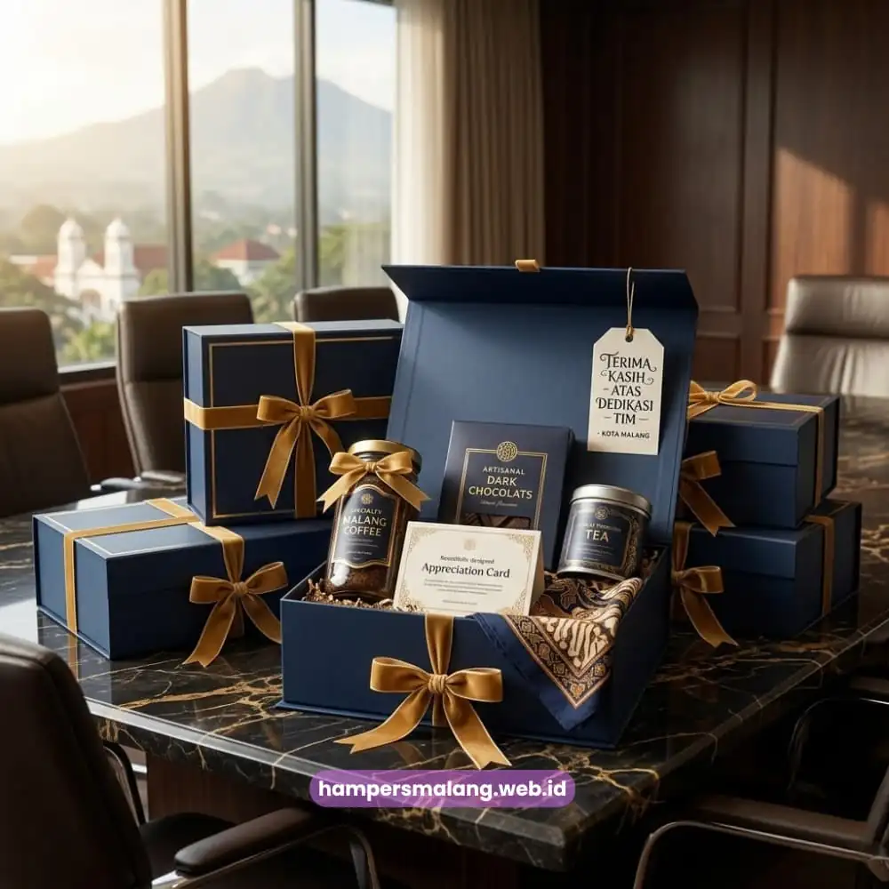
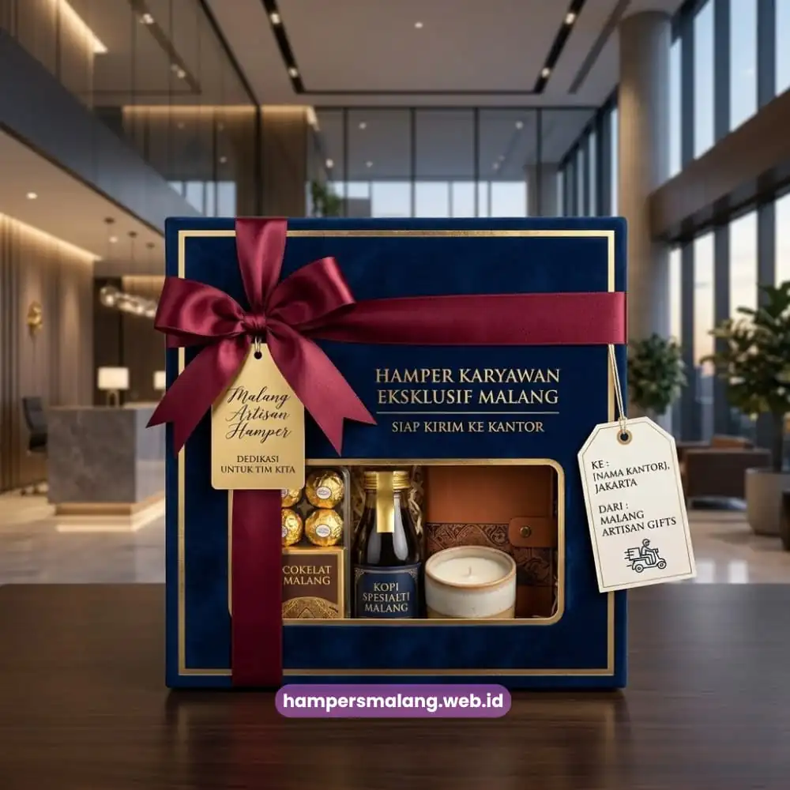

Hampers karyawan Malang adalah paket hadiah apresiasi yang disusun perusahaan untuk menghargai kinerja, loyalitas, atau momen penting karyawan.
Pemberian ini terbukti efektif mempererat hubungan kerja sekaligus menjaga semangat tim.
Artikel ini membahas manfaat, jenis, dan cara memilih hampers karyawan yang tepat untuk kantor Anda.
- Hampers karyawan adalah bentuk penghargaan nyata dari perusahaan kepada tim.
- Pemberian hampers dapat dilakukan pada momen tahun baru, ulang tahun perusahaan, atau pencapaian target kerja.
- Isi hampers yang relevan dan berkualitas lebih berkesan daripada sekadar mahal.
- Hampers karyawan Malang dapat disesuaikan dengan budget dan identitas brand perusahaan.
- Memesan hampers karyawan sebaiknya dilakukan jauh hari sebelum momen penting tiba.
Apa Itu Hampers Karyawan dan Mengapa Perusahaan Membutuhkannya?
Hampers karyawan adalah kumpulan barang bernilai yang dikemas rapi dalam satu paket, diberikan perusahaan sebagai simbol apresiasi atas kontribusi karyawan.
Kebutuhan ini muncul karena penghargaan verbal saja sering dianggap kurang membekas, sementara hadiah fisik memberikan kesan yang lebih tahan lama bagi penerimanya.
Perusahaan di Malang, baik skala UMKM maupun korporat besar, semakin sering mengandalkan hampers sebagai instrumen apresiasi.
Alasannya sederhana: karyawan yang merasa dihargai cenderung lebih loyal dan produktif. Hampers karyawan Malang menjadi jembatan komunikasi non-verbal antara manajemen dan tim, menegaskan bahwa kontribusi setiap individu benar-benar diperhatikan.
Selain aspek emosional, hampers juga berfungsi sebagai media branding internal. Perusahaan dapat menyematkan logo, warna korporat, atau pesan khusus pada kemasan, sehingga hampers sekaligus memperkuat identitas perusahaan di mata karyawan sendiri.
Baca Juga: Menyusun Anggaran Hampers Karyawan yang Ideal bagi Perusahaan
Untuk Siapa Hampers Karyawan Ini Cocok Diberikan?
Hampers karyawan cocok diberikan kepada seluruh lapisan tim, mulai dari staf operasional hingga level manajerial, tanpa membedakan jabatan secara mencolok. Kesetaraan dalam pemberian ini justru memperkuat rasa kebersamaan.
Beberapa kelompok penerima yang umum meliputi karyawan tetap, karyawan kontrak yang telah menyelesaikan masa kerja tertentu, tim yang mencapai target penjualan, hingga karyawan yang memasuki masa purnabakti.
Setiap kelompok dapat memperoleh komposisi hampers yang disesuaikan agar tetap relevan dengan situasi masing-masing.

Kapan Waktu yang Tepat Memberikan Hampers kepada Karyawan?
Waktu paling tepat memberikan hampers karyawan adalah pada momen yang memiliki makna emosional atau pencapaian penting, seperti akhir tahun, hari jadi perusahaan, atau pencapaian target kerja.
Ketepatan waktu memengaruhi seberapa besar dampak apresiasi yang dirasakan karyawan.
Momen akhir tahun menjadi salah satu waktu paling populer, karena bertepatan dengan evaluasi kinerja tahunan sekaligus perayaan pergantian tahun.
Selain itu, hari jadi perusahaan juga kerap dijadikan momentum untuk membagikan hampers sebagai bentuk syukur atas perjalanan bisnis bersama tim.
Momen lain yang tidak kalah relevan adalah pencapaian target kerja, penyelesaian proyek besar, hari raya keagamaan, hingga perayaan ulang tahun karyawan secara individu.
Fleksibilitas waktu pemberian ini membuat hampers karyawan Malang dapat disesuaikan dengan kalender kerja masing-masing perusahaan.
Apakah Hampers Bisa Diberikan di Luar Momen Formal Perusahaan?
Hampers karyawan tetap bisa diberikan di luar momen formal, misalnya sebagai bentuk dukungan saat karyawan menghadapi situasi tertentu atau sekadar penyemangat di tengah periode kerja yang padat.
Pemberian spontan seperti ini justru sering meninggalkan kesan lebih dalam karena dianggap tulus dan tidak seremonial.
Pendekatan ini banyak diadopsi perusahaan modern yang ingin membangun budaya kerja suportif, di mana apresiasi tidak hanya terikat pada agenda tahunan, melainkan menjadi bagian dari interaksi sehari-hari antara manajemen dan tim.
Apa Manfaat Memberikan Hampers Karyawan bagi Perusahaan?
Manfaat utama hampers karyawan adalah meningkatkan loyalitas, motivasi kerja, dan citra positif perusahaan di mata tim internal.
Dampak ini pada akhirnya berkontribusi pada stabilitas dan produktivitas organisasi secara keseluruhan.
Karyawan yang menerima apresiasi nyata cenderung merasa dihargai secara personal, bukan hanya sebagai bagian dari mesin produksi perusahaan.
Perasaan ini mendorong keterikatan emosional yang lebih kuat terhadap tempat kerja, sehingga secara umum dapat menekan tingkat pergantian karyawan.
Dari sisi budaya kerja, kebiasaan memberi hampers juga menciptakan lingkungan yang lebih positif dan kolaboratif.
Tim cenderung lebih terbuka dan bersemangat ketika mereka merasa usaha mereka diperhatikan, bukan dianggap sebagai hal yang wajar terjadi.
Bagaimana Hampers Memengaruhi Citra Perusahaan?
Hampers karyawan yang dikemas profesional turut membentuk persepsi positif terhadap perusahaan, baik di mata karyawan itu sendiri maupun pihak eksternal yang mungkin melihatnya melalui media sosial atau testimoni.
Kesan rapi dan bermakna pada hampers mencerminkan bagaimana perusahaan memperlakukan sumber daya manusianya.
Citra ini menjadi nilai tambah tersendiri, terutama saat perusahaan sedang membangun reputasi sebagai tempat kerja yang layak diperhitungkan, baik untuk mempertahankan talenta yang ada maupun menarik kandidat baru di masa depan.
Apa Saja Faktor yang Membuat Hampers Karyawan Berkesan?
Hampers karyawan yang berkesan ditentukan oleh relevansi isi, kualitas kemasan, dan sentuhan personal, bukan semata-mata harga barang di dalamnya.
Ketiga faktor ini saling melengkapi untuk menciptakan pengalaman menerima hadiah yang positif.
Relevansi isi berarti barang yang dipilih sesuai dengan kebutuhan atau gaya hidup penerima, misalnya kombinasi makanan ringan berkualitas, minuman, atau perlengkapan kerja praktis.
Kualitas kemasan turut memengaruhi kesan pertama, karena tampilan luar yang rapi menandakan keseriusan perusahaan dalam menyiapkan apresiasi tersebut.
Sentuhan personal, seperti kartu ucapan dengan nama penerima atau pesan singkat dari manajemen, sering kali menjadi elemen yang paling diingat.
Detail kecil ini menegaskan bahwa hampers tidak diberikan secara massal tanpa perhatian, melainkan disiapkan dengan niat yang jelas.
Apakah Harga Menentukan Kesan Hampers Karyawan?
Harga bukan satu-satunya penentu kesan sebuah hampers karyawan, karena komposisi yang tepat sasaran sering kali lebih berkesan dibandingkan barang mahal namun kurang relevan.
Perusahaan dapat menyesuaikan budget sesuai kemampuan tanpa mengorbankan kualitas pengalaman penerima.
Yang lebih menentukan adalah bagaimana isi hampers disusun secara cermat, mempertimbangkan kebutuhan umum karyawan kantoran, serta bagaimana keseluruhan paket disajikan agar terasa istimewa saat diterima.
Bagaimana Cara Memesan Hampers Karyawan di Malang?
Memesan hampers karyawan di Malang dapat dilakukan dengan menentukan jumlah penerima, budget, dan tema terlebih dahulu, sebelum berkonsultasi dengan penyedia hampers berpengalaman.
Perencanaan awal ini membantu memastikan hasil akhir sesuai dengan tujuan apresiasi perusahaan.
Setelah kebutuhan dasar ditentukan, perusahaan dapat mendiskusikan pilihan isi hampers, gaya kemasan, hingga kemungkinan kustomisasi logo atau warna korporat.
Proses konsultasi ini penting agar hasil akhir benar-benar mencerminkan identitas dan nilai perusahaan.
Sebagai penyedia hampers karyawan Malang yang memahami kebutuhan korporat, Hampers Malang siap membantu Anda menyusun paket apresiasi yang tepat sasaran, mulai dari skala tim kecil hingga seluruh divisi perusahaan.
Apa Saja Kesalahan Umum saat Memilih Hampers Karyawan?
Kesalahan umum dalam memilih hampers karyawan meliputi terlalu fokus pada harga murah, mengabaikan relevansi isi, dan memesan mendadak tanpa perencanaan waktu yang cukup.
Ketiga hal ini dapat mengurangi dampak positif yang seharusnya diperoleh dari pemberian hampers.
Pemesanan yang terburu-buru sering kali berujung pada kualitas kemasan yang kurang maksimal atau isi yang kurang sesuai dengan karakter penerima.
Oleh sebab itu, perencanaan sejak jauh hari sangat dianjurkan agar seluruh proses, mulai dari kurasi isi hingga pengemasan, dapat dikerjakan dengan matang.
Hampers karyawan Malang bukan sekadar formalitas tahunan, melainkan investasi jangka panjang untuk menjaga loyalitas dan semangat tim.
Dengan memperhatikan waktu pemberian, relevansi isi, dan kualitas kemasan, perusahaan dapat menciptakan pengalaman apresiasi yang benar-benar membekas di hati karyawan.
Tanya Jawab Seputar Hampers Karyawan
Hampers karyawan adalah paket hadiah yang disusun perusahaan sebagai bentuk apresiasi atas kinerja, loyalitas, atau momen penting karyawan.
Perusahaan dapat memberikan hampers pada momen akhir tahun, hari jadi perusahaan, pencapaian target kerja, atau hari raya keagamaan.
Tidak, kesan hampers lebih ditentukan oleh relevansi isi dan sentuhan personal dibandingkan harga barang di dalamnya.
Perusahaan dapat menentukan jumlah penerima, budget, dan tema, lalu berkonsultasi dengan penyedia hampers berpengalaman seperti Hampers Malang.
Bisa, banyak penyedia hampers menawarkan opsi kustomisasi kemasan dengan logo atau warna korporat sesuai identitas perusahaan.

Butuh Hampers Perusahaan?
Solusi Hampers & Corporate Gift Kreatif di Jawa Timur.
Ditulis oleh Tim Maroon Souvenir
Sahabat mahasiswa dan pelaku bisnis di Malang Raya. Berpengalaman menangani merchandise event kampus, instansi pemerintahan, dan hotel berbintang di Batu.